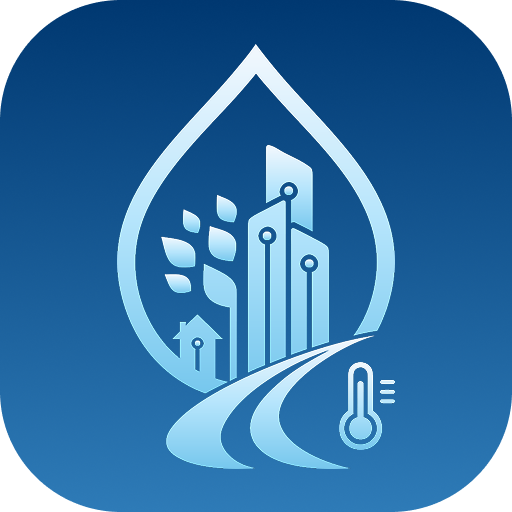

Die App TauSense ist Teil des Modellprojekts hoferLand.digital des Landkreises Hof. Sie informiert Bürgerinnen und Bürger sowie interessierte Nutzer über aktuelle Messwerte und Glätte- bzw. Eiswarnungen des Taupunktsensorik-Netzwerks im Hofer Land.
Alle Taupunktsensoren im Landkreis Hof werden auf einer Karte angezeigt. Jeder Sensor ist farblich markiert:
Die Warnstufen werden automatisch aus Straßentemperatur, Taupunkt und Luftfeuchte berechnet.
Bei Auswahl eines Sensors werden aktuelle Messwerte angezeigt, unter anderem:
Für jeden Sensor können historische Messwerte als Diagramm dargestellt werden. Der Zeitraum ist frei wählbar (bis zu 14 Tage).
Optional können Sie sich bei Eis- und Glättewarnungen per Push-Nachricht informieren lassen. Sie können festlegen:
Warnungen werden gesammelt versendet (z. B. „Erhöhte Eisgefahr an 3 Standorten“), damit nicht für jeden Sensor einzeln gemeldet wird.
Die Sensoren übermitteln ihre Messwerte per LoRaWAN an unser Backend. Die App ruft die aufbereiteten Daten über eine gesicherte API (HTTPS) ab. Das Backend wird in Rechenzentren in Deutschland betrieben.
Für Push-Benachrichtigungen wird Firebase Cloud Messaging (Google) genutzt. Es ist kein Benutzerkonto erforderlich.
Informationen zur Verarbeitung personenbezogener Daten finden Sie in unserer Datenschutzerklärung (Abschnitt 8.2 und 12.4).
Landratsamt Hof
Projektbüro hoferLand.digital (Modellprojekt Smart Cities)
Schaumbergstraße 14
95032 Hof
Telefon: 09281/57-0
E-Mail: smartcity@landkreis-hof.de
Weitere Informationen zum Projekt: hoferland-digital.de